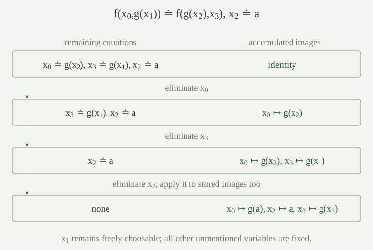
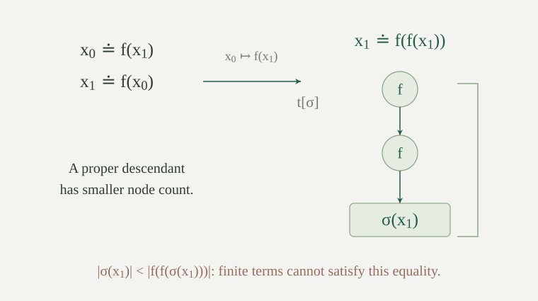

Fix a first-order language \(L\) and variables \(x_0,x_1,\ldots\). Terms are the finite trees defined in the first-order syntax. All terms here contain free variables only, with no quantified placeholders. A substitution is a map \(\sigma:\mathbb N\to\operatorname{Term}_L(\mathbb N)\). Its action \(t[\sigma]\) is the existing simultaneous substitution: replace a variable once by its assigned term and recurse through function applications.
The identity substitution is \(\mathrm{id}(x_i)=x_i\). The composition \(\tau\star\sigma\) means apply \(\sigma\) first and then \(\tau\):
A single-variable substitution \([t/x]\) sends \(x\) to \(t\) and fixes every other variable. Substitutions are total maps; a finite description lists only the variables they change. Constants and function symbols are never replaced. We also use replacements into terms with variables in another set \(A\): if \(\sigma\) has images with variables in \(A\) and \(\tau\) replaces those variables, the same formula defines \(\tau\star\sigma\). Substitution composition is therefore also meaningful when its intermediate and final variable alphabets differ.
For every term \(s\) and substitutions \(\sigma,\tau\),
Consequently \(\star\) is associative and has \(\mathrm{id}\) as a two-sided identity.
Induct on the tree \(s\). At a variable, both identities are the definitions. At \(f(s_0,\ldots,s_{k-1})\), substitution retains \(f\) and acts separately on each argument; the induction hypotheses give the claimed equality of argument tuples. This includes constants, which have no arguments. To check associativity, evaluate both substitutions at an arbitrary variable and apply the second identity to its replacement term. The identity laws follow in the same way.
The order matters. If \(\sigma=[f(x_1)/x_0]\) and \(\tau=[a/x_1]\), then \((\tau\star\sigma)(x_0)=f(a)\), whereas \((\sigma\star\tau)(x_0)=f(x_1)\).
A unification problem is a finite list \(P\) of pairs of terms, written as equations \(s\doteq t\). The symbol \(\doteq\) asks for literal equality of the resulting trees; it does not assert equality in one chosen structure. A substitution \(\sigma\), whose images may have variables in any set \(A\), is a unifier of \(P\) if \(s[\sigma]=t[\sigma]\) for every pair in \(P\). Repetitions and the order of equations do not affect this definition.
A unifier \(\mu:\mathbb N\to\operatorname{Term}_L(\mathbb N)\) is most general if, for every set \(A\) and every unifier \(\sigma:\mathbb N\to\operatorname{Term}_L(A)\), some \(\rho:\mathbb N\to\operatorname{Term}_L(A)\) satisfies
Thus \(\sigma=\rho\star\mu\). The equality is required on all variables, including those absent from \(P\). This convention retains their unrestricted choices in \(\rho\). Taking \(A=\varnothing\) includes substitutions by closed terms; it will be useful when a general solution is instantiated by ground terms. Most general does not mean a unique written substitution: different choices of variables to eliminate can produce different substitutions with this same factorization property.
For example, \([a/x_0]\) is a most general unifier of the one-equation problem \(x_0\doteq a\). Any solution fixes \(x_0\)'s image to \(a\), and is its own further substitution on the other variables. A solution of \(f(x_0,a)\doteq f(b,x_1)\) must have \(\sigma(x_0)=b\) and \(\sigma(x_1)=a\), because function applications have unique argument trees.
Let \(|x|=1\) and \(|f(t_0,\ldots,t_{k-1})|=1+\sum_{i<k}|t_i|\) be the node count of a term. If \(x\in\operatorname{FV}(t)\) and \(t\ne x\), then no substitution \(\sigma\), even into terms with a different variable alphabet, satisfies \(\sigma(x)=t[\sigma]\).
Each argument of a function application has strictly smaller node count than that application. Since \(x\) occurs in \(t\), follow one branch of its finite tree to an occurrence of \(x\). After substitution the same branch reaches the whole term \(\sigma(x)\), because substitution preserves every function symbol above that occurrence. If \(t\ne x\), the branch contains at least one function node, so \(|\sigma(x)|<|t[\sigma]|\). Equal terms have equal node counts, giving a contradiction. This argument also follows by induction on \(t\), choosing an argument containing \(x\) at the function case.
Testing whether \(x\) occurs in \(t\) before assigning \(x\mapsto t\) is the occurs check. It is a finite traversal of the tree. The equation \(x\doteq x\) is harmless and is discarded first; \(x\doteq f(x)\) fails the check. This concerns finite terms, not infinite trees satisfying a recursive equation.
Suppose \(x\notin\operatorname{FV}(t)\). Put \(\tau=[t/x]\), let \(R[\tau]\) mean apply \(\tau\) to both sides of every equation of \(R\), and put \(P=(x\doteq t)::R\). Then the following hold.
Substitution by \(\tau\) leaves \(t\) unchanged, since it changes only a variable absent from \(t\). Thus \(x[\tau][\theta]=t[\theta]=t[\tau][\theta]\); the remaining equations follow from the composition identity and the assumption about \(R[\tau]\). This proves the first assertion.
For the second, \(\sigma(x)=t[\sigma]\) says exactly that \((\sigma\star\tau)(x)=\sigma(x)\); at every other variable the equality is automatic. Therefore the substitutions are equal everywhere. If \(s\doteq u\) belongs to \(R\), then \(s[\tau][\sigma]=s[\sigma]=u[\sigma]=u[\tau][\sigma]\), proving the new equations.
For the third, take any original unifier \(\sigma\). The second assertion makes it a unifier of \(R[\tau]\), so choose \(\rho\) with \(\sigma=\rho\star\theta\). Also \(\sigma=\sigma\star\tau\). Substitution and associativity give \(\sigma=\rho\star(\theta\star\tau)\), as required on every variable. This is the factorization step that allows one successful recursive answer to represent all original solutions.
The same assertions apply to an equation written \(t\doteq x\), by symmetry. The condition \(x\notin\operatorname{FV}(t)\) is needed for the first assertion: without it, the assigned variable need not agree with its own substituted right-hand side.
Assume equality of function symbols at each arity is decidable. Together with equality of natural-number variables this makes the following tests executable. Define the unification solver \(\operatorname{solve}(V,P)\), where \(V\) is a finite set containing every variable occurring in \(P\). Its output is either failure or a substitution. Start with \(V=\operatorname{FV}(P)\), the union of the variable sets of both sides of all equations.
In the last case a constant has arity zero, so two equal constants contribute no new equations. The variable rule does not make a separate recursive call just to reverse an equation: it directly carries out the indicated test and elimination. Let \(\operatorname{unify}(P)\) abbreviate the initialized call.
The solver is well-defined and terminates on every finite input. At every recursive call, the new variable set contains the variables of the new equations, and the ordered pair
strictly decreases in lexicographic order: first compare the first coordinates, and use the second only when the first coordinates agree.
Discarding \(x\doteq x\) removes two nodes. Decomposing an equation between equal function symbols removes their two outer nodes; it retains exactly the argument nodes and the remaining equations. In both cases \(V\) is unchanged and the second coordinate strictly decreases. Removing the outer nodes introduces no variables.
In a variable elimination, \(x\) belongs to \(V\), because it occurs in the selected equation. Every variable of \(t\) also belongs to \(V\), and the occurs check ensures that none is \(x\). The substitution-support identity now shows that every variable in \(R[\tau]\) belongs to \(V\setminus\{x\}\). Its cardinality is \(|V|-1\). Substitution may increase the number of term nodes, but the first coordinate has decreased.
There is no infinite lexicographically decreasing sequence of such pairs. The first coordinate can drop only finitely many times. After its last drop it is fixed and the second coordinate would be a strictly decreasing sequence of natural numbers, which cannot continue indefinitely. Each local test and finite traversal terminates, so the recursive specification is an executable terminating algorithm.
For every finite problem \(P\), exactly the following alternatives apply.
In particular, the algorithm decides whether a finite list of first-order terms has a simultaneous syntactic solution, and every solution is a further substitution instance of the returned one.
Prove a stronger assertion for every supported call \(\operatorname{solve}(V,P)\): success returns a most general unifier fixing every variable outside \(V\), and failure means there is no unifier. Use induction on the lexicographic measure from the termination theorem.
An empty list is unified by the identity, and any substitution \(\sigma\) factors through it using \(\rho=\sigma\). Dropping \(x\doteq x\) preserves exactly the unifiers. For equal outer function symbols, equality of substituted applications is equivalent to equality of each substituted pair of arguments, so decomposition also preserves exactly the unifiers. Their recursive answers and all-variable factorizations apply unchanged. Different outer symbols or arities cannot become equal under substitution, so a clash has no solution.
The remaining immediate failure is the occurs check, handled by the finite-term obstruction. In a successful elimination, apply the elimination lemma to the recursive most general answer \(\theta\). It gives both that \(\theta\star\tau\) unifies the original problem and that every original solution factors through it. If the recursive call fails, any original solution would unify the reduced problem by the same lemma, contradicting the induction hypothesis.
It remains to check variables outside \(V\). Dropping and decomposition preserve their identity images by induction. In an elimination, such a variable differs from \(x\), so \(\tau\) fixes it; it is also outside \(V\setminus\{x\}\), so \(\theta\) fixes it. Their composition fixes it too. Initializing \(V\) with \(\operatorname{FV}(P)\) proves the assertion. The returned substitution consequently has a finite description, even though the factorization quantifies over all variables.
The factorization for ground substitutions is used in lifting resolution inferences: a ground pivot match factors through a most general unifier, retaining the exact ground resolvent as an instance.
Let \(f\) be binary, \(g\) unary, and \(a\) a constant. Unify
Give one most general answer and explain why assigning variables independently would lose a required relation.
Decompose the first equation into \(x_0\doteq g(x_2)\) and \(g(x_1)\doteq x_3\). Eliminate \(x_0\), then \(x_3\), and finally \(x_2\). Compose the replacements in that order, so the last replacement also acts inside the earlier image \(g(x_2)\). The resulting substitution is
and \(\mu(x_j)=x_j\) for all other indices. Direct substitution gives \(f(g(a),g(x_1))\) on both sides of the first equation and \(a\) on both sides of the second. Any unifier \(\sigma\) must satisfy \(\sigma(x_2)=a\), then \(\sigma(x_0)=g(a)\) and \(\sigma(x_3)=g(\sigma(x_1))\). Hence \(\sigma=\sigma\star\mu\), so this displayed answer is most general. The value of \(x_3\) is tied to the freely chosen value of \(x_1\); choosing their images independently need not satisfy the equation.

Let \(f\) be unary. Does the problem \(x_0\doteq f(x_1),\ x_1\doteq f(x_0)\) have a unifier? Neither original right-hand side contains its own left-hand variable.
Eliminating \(x_0\) replaces the second equation by \(x_1\doteq f(f(x_1))\). It now fails the occurs check. The elimination lemma proves that this failure rules out an original unifier as well. Equivalently any original solution would imply \(\sigma(x_1)=f(f(\sigma(x_1)))\), impossible for a finite term by node count. An occurs check confined to the unchanged original equations would miss this obstruction.

Compare unification with the following two problems: finding \(\sigma\) with \(s[\sigma]=t\), where the target \(t\) is left unchanged; and finding an assignment in a structure making the values of \(s,t\) equal. Are these the same problem?
The first problem is matching, which changes only the pattern. For distinct variables \(x_0,x_1\), the terms \(f(x_0,x_0)\) and \(f(x_1,a)\) unify by sending both variables to \(a\), but the first does not match the second: its two argument images would have to be both the unchanged variable \(x_1\) and the constant \(a\). If variables in a target must stay fixed during unification, they need to be treated as fixed parameters rather than substitutable variables.
The second problem depends on the chosen interpretations of symbols. Distinct constants \(a,b\) do not unify: substitution changes neither tree. Nevertheless a structure may interpret them by the same object. Indeed a one-element structure does so. The semantic substitution identity shows that syntactically equal substituted terms have equal values under every interpretation and assignment, but its converse fails in a particular structure. The solver decides equality of substituted finite trees, not arbitrary equations in a mathematical theory.